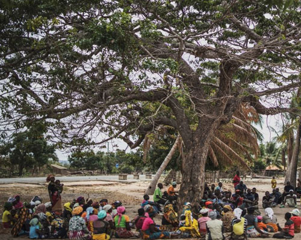

Mental health encompasses our emotional, psychological, and social well-being. It affects how we think, feel, act, handle stress, relate to others, and make choices. At Taransvar, we view mental health as inseparable from overall wellness.
Just as physical health requires maintenance and care, mental health needs attention and nurturing. We believe that mental health challenges are not character flaws but learned responses that can be reshaped with the right approach.
Our understanding of mental health is grounded in neuroscience—recognizing that the brain forms habits, memories, and responses through repeated experiences. This scientific foundation allows us to develop effective, evidence-based approaches to mental wellness.
At Taransvar, we're committed to destigmatizing mental health challenges and providing accessible, effective support for individuals at all stages of their mental health journey.
Our Unique ApproachTaransvar's approach is built on the science of neuroplasticity - the brain's ability to reorganize itself by forming new neural connections. This capacity for change is the foundation of our mental health interventions.
Unlike traditional approaches that may view mental health challenges as fixed conditions, we recognize that the brain can form new pathways throughout life. This perspective offers hope and practical direction for those seeking change.
By understanding how neural pathways are formed and reinforced, we can develop targeted interventions that help clients create healthier mental patterns and responses to life's challenges.
Our innovative approach focuses on creating environments that support mental health recovery and growth. We've learned that context matters profoundly in shaping behavior and mental states.
Key elements of our environmental approach include:
This environmental focus distinguishes our approach from traditional models that may overlook the powerful influence of context on mental health.
Our evidence-based methods combine the latest neuroscience research with time-tested practices, creating a unique approach that addresses both the biological and environmental factors influencing mental health.
Explore Our ProgramsOur programs are designed to address the unique needs of different populations while applying our core principles of brain-based change, supportive environments, and skill development.
Mental Health Conditions We AddressDepression involves persistent feelings of sadness, loss of interest, and decreased energy. At Taransvar, we view depression as involving learned patterns of negative thinking and behavioral withdrawal that can be reshaped through targeted interventions.
Through behavioral activation, cognitive restructuring, and community engagement, we help clients create new neural pathways that support recovery and resilience.
Anxiety disorders involve excessive worry, fear, and related behavioral disturbances. Through our neuroscience lens, we understand anxiety as involving overactive threat-detection systems and avoidance patterns that become self-reinforcing.
Gradual exposure therapy, mindfulness practices, and cognitive techniques form the foundation of our approach to rewiring these neural patterns and building confidence.
Bipolar disorder involves alternating periods of elevated mood (mania) and depression. While there is a strong biological component, we recognize that environmental factors and learned responses significantly influence symptom expression and management.
Combining medical management with lifestyle regularity and stress reduction techniques helps clients establish stability and prevent episode escalation.
Post-Traumatic Stress Disorder develops after exposure to traumatic events. From our perspective, PTSD involves the brain's adaptive but ultimately problematic encoding of trauma memories and associated triggers.
Safety establishment, trauma processing, and trigger response retraining form the core of our comprehensive approach to helping clients reclaim their lives after trauma.
Obsessive-Compulsive Disorder involves intrusive thoughts and repetitive behaviors. We understand OCD as involving reinforced neural circuits where anxiety relief from compulsions strengthens the cycle.
Exposure and response prevention techniques help clients break the reinforcement cycle and develop healthier responses to intrusive thoughts and anxiety.
Substance use disorders involve patterns of substance use that cause significant impairment. We view addiction as learned behavior involving powerful neural reward pathways that can be reshaped through comprehensive intervention.
Trigger management, alternative reward pathway development, and supportive community building create a foundation for lasting recovery and reduced relapse risk.
This simple assessment can help you become more aware of your current mental state. It's not a diagnostic tool, but a starting point for reflection.
Personalized therapeutic sessions tailored to individual needs and goals, guided by our brain-based approach.
Our therapists are trained to understand neural mechanisms and help clients reshape problematic patterns through targeted interventions.

Facilitated group sessions that harness the power of community support and shared learning experiences.
Group settings provide opportunities for social learning, feedback, and the development of interpersonal skills in a supportive environment.
Creative therapeutic approaches that engage different neural pathways to process emotions and experiences.
These modalities can access and reshape emotional patterns that may be difficult to address through verbal therapy alone.
Complementary approaches including yoga, mindfulness, and nutritional support that address the mind-body connection.
These practices help regulate the nervous system, build body awareness, and develop sustainable self-care routines.
Our treatment approaches are most effective when combined and tailored to individual needs. We believe in comprehensive care that addresses biological, psychological, social, and environmental factors.
Our Educational PartnershipsAt Taransvar, we believe that educational institutions are natural partners in our mission to transform mental health care. We actively collaborate with schools, colleges, and universities to integrate comprehensive mental health education and sanctuary operations into their curriculum.
Our approach is innovative because it provides a scientific explanation for methods that have historically yielded great success. Understanding the reasons behind these successes allows us to fine-tune our approach and optimize outcomes.
Through these partnerships, we:
Access affordable mental health support through these vetted platforms and services.
Connect with others who understand what you're experiencing through community-based support.
Find mental health services in your community through established healthcare providers.
Remember, seeking help is a sign of strength, not weakness. If you're struggling with mental health challenges, reach out to a trusted professional or support resource.
Contact Us for SupportWhether you're seeking support for yourself or a loved one, Taransvar offers resources, community, and evidence-based approaches to help you build lasting mental wellbeing.
Remember, mental health is a journey, not a destination. Small steps taken consistently can lead to significant positive change over time.
Contact Us Today{kind=link}
{kind=link}
{kind=link}
{kind=link}
{kind=link}
{kind=link}